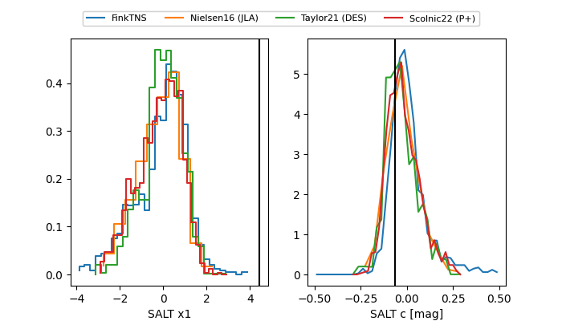

FINK: ZTF25abmoctj
Lasair: ZTF25abmoctj
ALeRCE: ZTF25abmoctj
TNS: 2025wgi
YSE: 2025wgi
ZTF25abmoctj (ztf,fink)
2025wgi (tns,yse)
ATLAS25ktl (atlas)
PS25hjm (panstarrs)
equatorial (ra, dec) = (45.4997,+14.69919)
galactic (l, b) = (164.0705,-37.53201)

last atlaso=20.10, ztfg=19.93, ztfr=20.21
1 atlaso, 1 ztfg, 4 ztfr detections